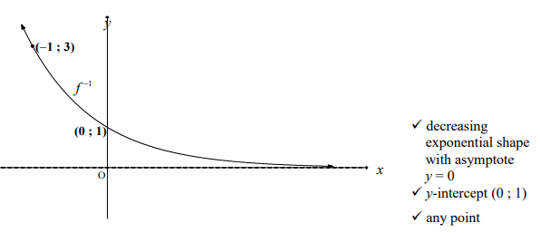
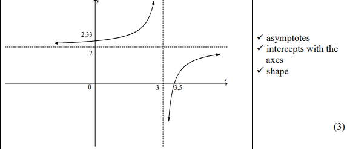
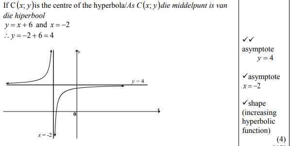
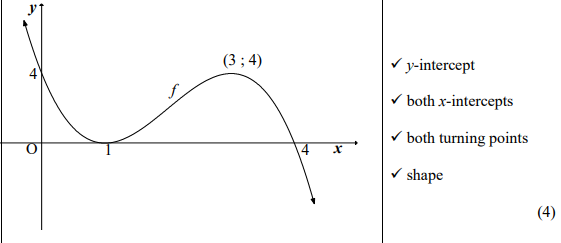
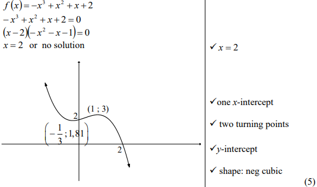
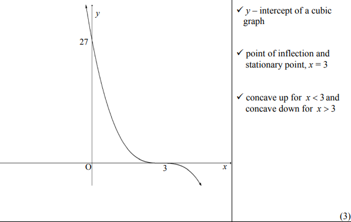
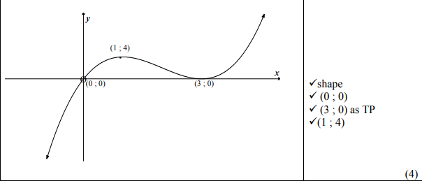
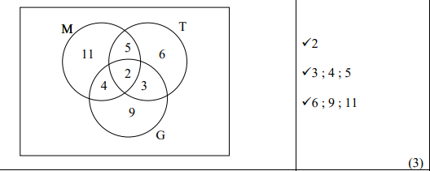
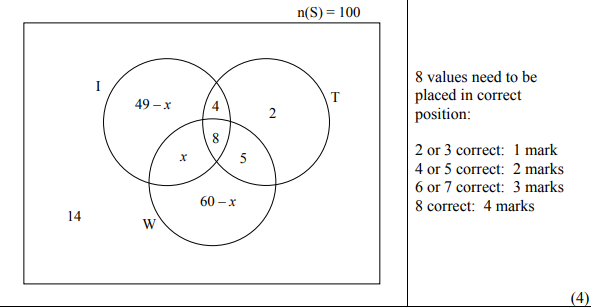

Tips and Advice
Mathematics P1

Mathematics paper 1 consists of 6 topics which amount to 150 marks, as you can see on the diagram. The breakdown of the marks can vary slightly from year to year but is usually about the same. The heart of Mathematics P1 is Algebra, i.e. knowing how to solve for x, simultaneous equations, and your laws of exponents. Once you understand algebra, it will become increasingly clear that you are being asked the same the same questions but in different contexts; either it is Functions, Calculus, or finance.
So, do not view Mathematics Paper 1 as 6 different topics but one whole divided into smaller parts; functions and graphs are just algebra visualized on the Cartesian plane, Grade 12 Calculus is just functions and graphs with optimization and derivatives, finance is just number patterns with money, number patterns are just algebra and functions with discrete values. The more you notice these connections, the easier most questions will be; The examiners are aware of this and will often evaluate if you are aware of these connections as well. The more you practice, the clearer these connections will become, helping you draw experiences from other topics when you encounter a challenging question. Wishing you all the best!!!
Breakdown of what the paper tests
Knowledge (20%): knowing which formulas to use, knowing when to use certain mathematical facts, knowing the procedures and how to round. Routine procedures (35%): Knowledge of how to perform procedures, how to prove certain theorems, applications of theorems. Complex procedures (30%): problems involving high order reasoning, involves making connections between different topics, require understanding of the topics and concepts. Problem solving (15%): non routine problem solving, high order reasoning also required, problems that need to be broken into smaller parts to understand, involves using solutions and making conclusions from solutions found in prior questions
How to practice
The best way to practice is to first attempt the questions yourself, then view solutions and grade yourself. As each Mathematics paper is only 3 hours long, with 150 marks each, it can be challenging to finish on time; hence, once you are more comfortable with the topic, you should practice answering the questions at a faster pace. Past papers are an immensely powerful tool for exam practice and understanding; however, they do not replace textbooks. I would suggest first going through a topic in a textbook, notes, or explanation videos before attempting past questions, then go back to the book or notes when you get stuck and see if there is something you might be missing.
Algebra, Equations and Inequalities(2015-2025) [25 Marks]
2025
1.1 Solve for \(x\):
1.2 Calculate the values of \(x\) and \(y\) if:
• Five times the product of \(x\) and \(y\) is 6 more than the square of \(x\) (6)
Show answers
\(x=\dfrac{-9\pm\sqrt{41}}{10}\)
\(x=-0{,}26\) or \(x=-1{,}54\)
Critical values: \(0\) ; \(\dfrac14\)
\(x<0\) or \(x>\dfrac14\)
\(k=\dfrac12\) or \(k=4\)
\(x=-1\) or \(x=2\)
\((k-2)(k+1)=0 \Rightarrow k=2\) (reject \(k=-1\))
\(\dfrac{1}{\sqrt{x}}=2 \Rightarrow x=\dfrac14\)
Substitute: \(5(y+2)y=(y+2)^2+6 \Rightarrow 2y^2+3y-5=0 \Rightarrow (2y+5)(y-1)=0\)
\(y=-\dfrac52\) or \(y=1\)
\(x=-\dfrac12\) or \(x=3\)
2024
1.1 Solve for \(x\):
1.2 Solve for \(x\) and \(y\) simultaneously:
1.3 Consider the product \(\left(1+\dfrac12\right)\left(1+\dfrac13\right)\left(1+\dfrac14\right)\cdots\)
Determine ALL values of \(n\) for which the product will be an integer value. (3)
Show answers
\(x=\dfrac{4\pm\sqrt8}{4}\) → \(x=1{,}71\) or \(x=0{,}29\)
\(x<-1\) or \(x>3\)
\(k=8\) (\(k=-4\) has no solution)
\(2^x=2^3 \Rightarrow x=3\)
\(-2x+4=4+4x+x^2 \Rightarrow x^2+6x=0 \Rightarrow x(x+6)=0\)
\(x=0\) (reject \(x=-6\))
\((2x-7)(x-1)=0 \Rightarrow x=\dfrac72\) or \(x=1\)
\(y=-4\) or \(y=1\)
This is an integer when \(n+1\) is divisible by 2, i.e. \(n\) is odd.
Therefore \(n\in\{3;5;7;9;\ldots\}\), i.e. \(n\) is an odd number greater than 2.
2023
1.1 Solve for \(x\):
1.2 Solve for \(x\) and \(y\) simultaneously: \(x+2=2y\) and \(\dfrac1x+\dfrac1y=1\) (5)
1.3 Given: \(2^{m+1}+2^m=3^{n+2}-3^n\), where \(m\) and \(n\) are integers. Determine the value of \(m+n\). (4)
Show answers
\(x=\dfrac{2\pm\sqrt{76}}{6}=\dfrac{1\pm\sqrt{19}}{3}\) → \(x=1{,}79\) or \(x=-1{,}12\)
\(x=0\) is rejected (extraneous); \(x=4\)
\(x<-1\) or \(x>3\)
\(2y^2-5y+2=0 \Rightarrow (2y-1)(y-2)=0\)
\(y=\dfrac12 \Rightarrow x=-1\); \(y=2 \Rightarrow x=2\)
\(m+n=4\)
2022
1.1 Solve for \(x\):
1.2 Solve for \(x\) and \(y\) simultaneously: \(2x-y=2\) and \(xy=4\) (5)
1.3 Show that \(2\cdot5^n-5^{n+1}+5^{n+2}\) is even for all positive integer values of \(n\). (3)
1.4 Determine the values of \(x\) and \(y\) if: \(\dfrac{3^{y+1}}{32}=\sqrt{96^x}\) (4)
Show answers
\(x<-9\) or \(x>10\)
\(x=9\) or \(x=16\)
\(x=2,\ y=2\) or \(x=-1,\ y=-4\)
This is an integer multiplied by an even number, so the expression is even.
Equating powers of 2: \(-5=\dfrac{5x}{2}\Rightarrow x=-2\)
Equating powers of 3: \(y+1=\dfrac{x}{2}\Rightarrow y=-2\)
2021
1.1 Solve for \(x\):
1.2 Solve simultaneously for \(x\) and \(y\) in: \(2y=3+x\) and \(2xy+7=x^2+4y^2\) (6)
1.3 The roots of an equation are \(x=\dfrac{-n\pm\sqrt{n^2-4mp}}{2m}\) where \(m,n,p\) are positive real numbers. The numbers \(m,n,p\), in that order, form a geometric sequence. Prove that \(x\) is a non-real number. (4)
Show answers
\(-4\le x\le-1\)
\(x\ne8\) (extraneous); \(x=-3\)
\(4y^2-6y+2=0 \Rightarrow 2y^2-3y+1=0 \Rightarrow (2y-1)(y-1)=0\)
\(y=\dfrac12,\ x=-2\); or \(y=1,\ x=-1\)
Discriminant \(\Delta=n^2-4mp=mp-4mp=-3mp\)
Since \(m>0\) and \(p>0\), \(mp>0\), so \(\Delta=-3mp<0\)
\(\therefore \Delta<0 \Rightarrow x\) is non-real.
2020
1.1 Solve for \(x\):
1.2 Solve simultaneously for \(x\) and \(y\): \(x+y=3\) and \(2x^2+4xy-y=15\) (6)
1.3 If \(n\) is the largest integer for which \(n^{200}<5^{300}\), determine the value of \(n\). (3)
Show answers
\(x<-2\) or \(x>1\)
\(x=7\) (reject \(x=-2\))
\(x=\dfrac{13\pm5}{4}\) → \(x=\dfrac92\) or \(x=2\)
\(y=-\dfrac32\) or \(y=1\)
Maximum value of \(n\) is 11.
2019
1.1 Solve for \(x\):
1.2 Solve simultaneously for \(x\) and \(y\): \(y+x=12\) and \(xy=14-3x\) (5)
1.3 Consider the product \(1\times2\times3\times4\times\cdots\times30\). Determine the largest value of \(k\) such that \(3^k\) is a factor of this product. (4)
Show answers
\(\therefore x=4\) (selection, since \(x\ge0\))
\((x-14)(x-1)=0 \Rightarrow x=14,\ y=-2\); or \(x=1,\ y=11\)
\(k=14\)
2018
1.1 Solve for \(x\):
1.2 Solve simultaneously for \(x\) and \(y\): \(3x-y=2\) and \(2y+9x^2=-1\) (6)
1.3 If \(3^{9x}=64\) and \(5^{\sqrt{p}}=64\), calculate, WITHOUT the use of a calculator, the value of \(\dfrac{\big[3^{x-1}\big]^3}{\sqrt{5}^{\sqrt{p}}}\) (4)
Show answers
\(k=4 \Rightarrow x=16\)
\(x=\dfrac13,\ y=-1\); or \(x=-1,\ y=-5\)
\(3^{3x-3}=\dfrac{4}{27}\); and \(\sqrt{5^{\sqrt{p}}}=\sqrt{64}=8\)
Expression \(=\dfrac{4/27}{8}=\dfrac{1}{54}\)
2017
1.1 Solve for \(x\):
1.2 Solve for \(x\) and \(y\) if: \(3x-y=4\) and \(x^2+2xy-y^2=-2\) (6)
1.3 Given: \(f(x)=x^2+8x+16\)
Show answers
\(x=5\) (select valid root)
\((x-7)(x-1)=0 \Rightarrow x=7,\ y=17\); or \(x=1,\ y=-1\)
\(\therefore 0 < p < 16\)
2016
1.1 Solve for \(x\):
1.2 Given: \(f(x)=x^2+3x-4\)
Show answers
\(x=1\) or \(x=2\) — both valid
\(x=3\)
\(y=2,\ x=4\); or \(y=-2,\ x=-4\)
2015
1.1 Solve for \(x\):
1.2 Given: \((3x-y)^2+(x-5)^2=0\). Solve for \(x\) and \(y\). (4)
1.3 For which value of \(k\) will the equation \(x^2+x=k\) have no real roots? (4)
Show answers
\(x=\dfrac{-5\pm\sqrt{73}}{6}\) → \(x=0{,}59\) or \(x=-2{,}26\)
\(x=2^{-3}=\dfrac18=0{,}125\)
\(x=2\)
\(3x-y=0\) and \(x-5=0 \Rightarrow x=5,\ y=15\)
Number Patterns(2015-2025)[25 Marks]
2025[10]
2.1 Given the infinite geometric series: \((t+10)+(t-2)+(t+4)+\ldots\)
2.2 Given \(\displaystyle\sum_{p=k}^{117}(4p-1)=26\,675\)
Show answers
\(t^2-4t+4=t^2+14t+40 \Rightarrow -18t=36 \Rightarrow t=-2\)
\(T_{25}=8\left(-\dfrac12\right)^{24}=\left(\dfrac12\right)^{21}=2^{-21}\)
\(26\,675=\dfrac{118-k}{2}\big[4k-1+467\big]\)
\(2k^2-3k-819=0 \Rightarrow (k-21)(2k+39)=0\)
\(k=21\) (reject \(k=-\tfrac{39}{2}\))
The depth of a torpedo below sea level forms a quadratic pattern, where 0 metres is at sea level. A submarine tracked a torpedo in one-second intervals. The depth (in metres) reached is given below:

At the end of the first second: 36 | At the end of the first 2 seconds: 71 | At the end of the first 3 seconds: 104
Show answers
$T_5 = 164$
2024[10]
2.1 The first term of an arithmetic series is 7. The common difference is 5 and the series contains 20 terms.
2.2 The sequence of first differences of a quadratic pattern is: \(1;3;5;\ldots\)
Show answers
\(\displaystyle\sum_{n=21}^{75}(5n+2)=13\,310\)
\(T_{98}=9\,632-195=9\,437\)
Using \(T_1=28\), \(T_2=29\): \(b=-2\), \(c=29\)
\(T_n=n^2-2n+29\)
A circle with radius 6 cm is drawn. A second, smaller circle is drawn through the centre of the first circle and touches the first circle internally. A third, smaller circle is drawn through the centre of the second circle and touches the second circle internally. The process continues, forming a geometric pattern.

Show answers
2023[16+10]
Show answers
Show answers
2022[10]
2.1 The first term of a geometric series is 14 and the 6th term is 448.
2.2 If \(\displaystyle\sum_{p=0}^{k}\left(\dfrac13 p+\dfrac16\right)=20\dfrac16\), determine the value of \(k\). (5)
Show answers
\(2^n-1=8\,191 \Rightarrow 2^n=8\,192=2^{13} \Rightarrow n=13\)
\(\therefore\) 7 more terms must be added to the first 6 terms.
\(\dfrac{121}{6}=\dfrac{n}{2}\Big[\dfrac13+\dfrac13 n-\dfrac13\Big] \Rightarrow 121=n^2 \Rightarrow n=11\)
\(\therefore k=10\)
The general term of a quadratic number pattern is $T_n=n^2+bn+9$ and the first term of the first differences is 7.
Show answers
2021[11+10]
Given the geometric series: \(x+90+81+\ldots\)
Show answers
Consider the quadratic number pattern: $-145;-122;-101;\dots$
Show answers
Consider the linear pattern: $5;7;9;\dots$
Show answers
2020[8]
2.2 Given the quadratic number pattern: \(-3\ ;\ 6\ ;\ 27\ ;\ 60\ ;\ldots\)
Show answers
\(x=1\); \(y=-5\)
\(T_n=6n^2-9n\)
\(S_n=\dfrac{n}{2}\big[18+12n-12\big]=\dfrac{n}{2}(12n+6)=6n^2+3n\)
\(6n^2+3n-21\,063=0 \Rightarrow 2n^2+n-7\,021=0\)
\(n=\dfrac{-1\pm\sqrt{56\,169}}{4}=\dfrac{-1\pm237}{4} \Rightarrow n=59\)
Show answers
2019[9]
2.1 Given the quadratic sequence: \(321\ ;\ 290\ ;\ 261\ ;\ 234\ ;\ldots\)
2.2 Given the geometric series: \(\dfrac58+\dfrac{5}{16}+\dfrac{5}{32}+\cdots=K\)
Show answers
\(T_n=n^2-34n+354\)
\(n=14\) or \(n=20\)
\(S_{21}=\dfrac{\frac58\left(1-\left(\frac12\right)^{21}\right)}{1-\frac12}=1{,}25\)
\(n-1<10 \Rightarrow n<11 \Rightarrow n=10\)
3.2 A steel pavilion at a sports ground comprises a series of 12 steps. Each step is 5 m wide, with a rise of $\tfrac13$ m and a tread of $\tfrac23$ m. The open (shaded) side on each side of the pavilion must be covered with metal sheeting.

Show answers
2018[11]
2.1 Given the quadratic sequence: \(2\ ;\ 3\ ;\ 10\ ;\ 23\ ;\ldots\)
2.2 Given the arithmetic sequence: \(35\ ;\ 28\ ;\ 21\ ;\ldots\)
Show answers
\(T_n=3n^2-8n+7\)
Equate to \(3n^2-8n+7\): \(13n^2-93n+14=0\)
\((n-7)(13n-2)=0 \Rightarrow n=7\) (reject \(n=\tfrac{2}{13}\))
A geometric series has a constant ratio of $\tfrac12$ and a sum to infinity of 6.
Show answers
2017
2.1 Given the quadratic number pattern: \(5\ ;\ -4\ ;\ -19\ ;\ -40\ ;\ldots\)
2.2 The first three terms of an arithmetic sequence are \(2k-7\ ;\ k+8\) and \(2k-1\).
Show answers
\(T_n=-3n^2+8\)
First term \(=17\), \(d=3\)
\(T_{15}=17+14(3)=59\)
\(S_{30}=\dfrac{30}{2}\big[2(20)+29(6)\big]=3\,210\)
A convergent geometric series consisting of only positive terms has first term \(a\), constant ratio \(r\) and \(n\)th term \(T_n\), such that \(\displaystyle\sum_{n=3}^{\infty}T_n=\dfrac14\).
Show answers
Combine with \(a=\dfrac{2}{1+r}\): \(9(1-r^2)=8 \Rightarrow r^2=\dfrac19 \Rightarrow r=\dfrac13\)
\(a=\dfrac{2}{1+\frac13}=\dfrac32\)
2016[15]
Given the finite arithmetic sequence: \(5\ ;\ 1\ ;\ -3\ ;\ldots\ ;\ -83\ ;\ -87\)
Show answers
Sum of negatives \(=-984-6=-990\)
Terms divisible by 5 occur every 5th term starting at \(T_1=5\): there are 210 such terms.
3.2 Rectangles of width 1 cm are drawn from the edge of a sheet of paper 30 cm long, with a 1 cm gap between rectangles. The first rectangle has length 21 cm, and each successive rectangle's length is 85% of the previous one, until rectangles fill the entire length AD. Each rectangle is coloured grey.

Show answers
2015[12]
The following geometric sequence is given: \(10\ ;\ 5\ ;\ 2{,}5\ ;\ 1{,}25\ ;\ldots\)
Show answers
\(S_\infty-S_n=20(0{,}5)^n\)
Consider the series: $S_n=-3+5+13+21+\dots$ to $n$ terms.
Show answers
Functions and Graphs(2015-2025) [15 Marks]
2025[36]
The graph of $f(x)=\log_{\frac13}x$ is drawn below. Point A is the $x$-intercept of $f$ and $(3;t)$ lies on $f$.

Show answers
4.1 $t=\log_{\frac13}3=\textbf{-1}$
4.2 $x$-intercept: $\log_{\frac13}x=0\Rightarrow x=1$. $\textbf{A(1;0)}$
4.3 $y = \log_{1/3}(x) \implies x = \left(\frac{1}{3}\right)^y$; swap: $\mathbf{y = \left(\frac{1}{3}\right)^x}$
4.4 $y=0$
4.5 Decreasing exponential through $(1;0)$ and $(0;1)$ (translated up from A), asymptote $y=0$.

4.6 $h(x)=f^{-1}(x-5)=\left(\tfrac13\right)^{x-5}$. As $x\to4^{+}$, $y\to3$; as $x\to\infty$, $y\to0$. $\textbf{0<y<3}$
Total: 10
The graphs of $f(x)=ax^2+bx+c$ and $g(x)=\dfrac{-4}{x-3}+8$ are drawn below. P is the turning point of $f$ and the point of intersection of the asymptotes of $g$. The graphs intersect at D$(5;6)$. M and T are the $x$-intercepts of $f$ and $g$ respectively.

Show answers
5.1 $x\in\mathbb{R}, x\ne3$
5.2 $y\le8$
5.3.1 Solving $f = g$ gives the single real solution $x = 5$ (D); testing regions shows $g \le f$ for $\mathbf{3 < x \le 5}$
5.3.2 $-\tfrac12x^2+3x+3{,}5<6 \Rightarrow x^2-6x+5>0 \Rightarrow (x-1)(x-5)>0 \Rightarrow \textbf{x<1 or x>5}$
5.4 Using vertex form with P$(3; 8)$: $f(x) = a(x - 3)^2 + 8$. Substituting D$(5; 6)$: $4a + 8 = 6 \implies a = -\frac{1}{2}$. $\therefore f(x) = -\frac{1}{2}(x - 3)^2 + 8 = \mathbf{-\frac{1}{2}x^2 + 3x + \frac{7}{2}}$
5.5 $f(x)=0$: $x^2-6x-7=0\Rightarrow(x-7)(x+1)=0\Rightarrow x=7$ (M). $g(x)=0$: $\tfrac{-4}{x-3}+8=0\Rightarrow x=3{,}5$ (T). $MT=7-3{,}5=\textbf{3,5 units}$
5.6 $f'(x)=-x+3$; $f'(5)=-2$. Tangent: $y-6=-2(x-5)\Rightarrow \textbf{y=-2x+16}$
Total: 18
The graphs of $g(x)=x+c$ and $f(x)=\dfrac{a}{x+p}+q$ are drawn below. Graph $g$ and the vertical asymptote of $f$ intersect on the $x$-axis.

Show answers
6.1 Since $g$ meets its own $x$-axis intercept where the vertical asymptote crosses: $\textbf{(-p;0)}$
6.2 Let $c = p$ (from 6.1). $g(1) = q \implies q = 1 + c$. $g(0) = f(0) \implies c = \frac{a}{p} + q$. $g(3) = f(3) \implies 3 + p = \frac{a}{3+p} + q$. Solving simultaneously: $p = -2$, $a = 2$, $q = -1$. $\therefore \mathbf{f(x) = \frac{2}{x-2} - 1}$
6.3 Centre of $f$ is $(2;-1)$; axis of symmetry with gradient 1 through the centre is $y=x-3$, whereas $g:y=x-2$. $\textbf{Translate }g\textbf{ 1 unit down}$
Total: 8
2024[9+18+15]
Given: $f(x)=a^x-1$ for $a>0$. $B\left(2;-\dfrac{5}{9}\right)$ is a point on $f$.
Sketched below is the graph of $f(x)=\dfrac{a}{x+p}+q$ having the domain $(-\infty;1)\cup(1;\infty)$. The graph of $f$ cuts the $y$-axis at $(0;1)$. A line of symmetry of $f$ is given by $g(x)=x-3$.

Show answers
5.1 Vertical asymptote $x=1 \Rightarrow \textbf{p=-1}$
5.2 Centre $(1;q)$ lies on $g(x)=x-3$: $q=1-3=\textbf{-2},\ \text{so } y=-2$
5.3 $f(0)=\dfrac{a}{-1}-2=1 \Rightarrow -a=3 \Rightarrow \textbf{a=-3}$
5.4 $f(x) = \frac{-3}{x-1} - 2$; $x$-intercept at $x = -0.5$. Testing branches: $\mathbf{-0.5 \le x < 1}$
5.5 $f$ is increasing on each branch; reflecting $f$ about the vertical asymptote $x=1$ keeps the same domain and range but makes $h$ decreasing.
Total: 10
The graphs of $f(x)=-x^2+4x+5$ and $g$, a straight line, are drawn below. C$(3;8)$ is a point of intersection of $f$ and $g$. EH is drawn parallel to the $y$-axis, with E a point on $f$ and H a point on $g$.

Show answers
6.1 $x=\dfrac{-4}{2(-1)}=2$; $f(2)=9$. $\textbf{B(2;9)}$
6.2 $f(x)=0\Rightarrow x^2-4x-5=0\Rightarrow(x-5)(x+1)=0$; A$(-1;0)$. Gradient$=\dfrac{8-0}{3-(-1)}=2$. $\therefore \textbf{g(x)=2x+2}$
6.3 $EH=f(x)-g(x)=-x^2+2x+3$, maximum at $x=1$: $EH=\textbf{4 units}$
6.4 Setting $k(x)=g(x)$: $x^2+(2m-2)x+(m^2-4m-3)=0$. Tangency: discriminant$=0$: $(2m-2)^2-4(m^2-4m-3)=0 \Rightarrow 8m+16=0 \Rightarrow \textbf{m=-2}$
Total: 15
2023[32]
Sketched below is the graph of $f(x)=2^x-4$ for $x\in[-2;4)$. A and B are respectively the $y$- and $x$-intercepts of $f$.

Show answers
4.1 $y=-4$
4.2 $2^x=4\Rightarrow x=2$. $\textbf{B(2;0)}$
4.3 A$(0; -3)$. Gradient $= \frac{0 - (-3)}{2 - 0} = \frac{3}{2}$. $\mathbf{k(x) = \frac{3}{2}x - 3}$
4.4 $f(1)=-2$; $k(1)=-1{,}5$. Distance$=\textbf{0,5 units}$
4.5 $\textbf{g(x)=2^x}$
4.6 Range of $g$ for $x \in [-2; 4)$ is $[0.25; 16)$, so domain of $g^{-1}$ is $\mathbf{\left[\frac{1}{4}; 16\right)}$
4.7 $x = 2^y \implies \mathbf{y = \log_2 x}$
Total: 14
The graphs of $f(x)=-\tfrac12(x-1)^2+8$ and $g(x)=\dfrac{d}{x}$ are drawn below. A point of intersection of $f$ and $g$ is B, the turning point of $f$. The graph $f$ has $x$-intercepts at $(-3;0)$ and $(5;0)$ and a $y$-intercept at C.

Show answers
5.1 $\textbf{(1;8)}$
5.2 $f(0)=7{,}5$. $\textbf{C(0;7,5)}$
5.3 B$(1;8)$ on $g$: $\textbf{d=8}$
5.4 $y\in\mathbb{R},\ \textbf{y\ne0}$
5.5 $f \ge 0$ for $x \in [-3; 5]$; $g > 0$ for $x > 0$. Sign analysis of the product gives $\mathbf{-3 \le x < 0 \text{ or } x \ge 5}$
5.6 $-2x+k=\tfrac8x \Rightarrow 2x^2-kx+8=0$. No solution: $k^2-64<0 \Rightarrow \textbf{-8<k<8}$
5.7 Tangency (first quadrant): $k=8\Rightarrow h(x)=-2x+8$; point of contact $x=2$, R$(2;4)$. $f(2)=7{,}5$. $f(2)+t=4\Rightarrow \textbf{t=-3,5}$
Total: 18
2022[20+13]

4.1 Sketched below is the graph of $h(x)=\dfrac{1}{x+p}+q$. The asymptotes of $h$ intersect at $(1;2)$.

4.2 Given $f(x)=x^2-4x-5$ and $g(x)=ax^b+q$ related to $f$ as described in the original diagram (turning point/asymptote data used below).
Show answers
2022 (cont.)[13]
The graphs of $g(x)=2x+6$ and $g^{-1}$, the inverse of $g$, are shown below. D and B are the $x$- and $y$-intercepts respectively of $g$. C is the $x$-intercept of $g^{-1}$. The graphs of $g$ and $g^{-1}$ intersect at A.

Show answers
5.1 $g(0)=6$. $\textbf{y=6}$
5.2 Swap: $x = 2y + 6 \implies \mathbf{g^{-1}(x) = 0.5x - 3}$
5.3 $A$ lies on $y=x$: $2x+6=x \Rightarrow x=-6$. $\textbf{A(-6;-6)}$
5.4 $AB = \sqrt{(0 - (-6))^2 + (6 - (-6))^2} = \sqrt{36 + 144} = \mathbf{6\sqrt{5} \approx 13.42\text{ units}}$
5.5 $C(6;0)$. Using the shoelace formula for A$(-6;-6)$, B$(0;6)$, C$(6;0)$: Area$=\tfrac12|(-6)(6-0)+0(0-(-6))+6(-6-6)|=\tfrac12|-36-72|=\textbf{54 square units}$
Total: 13
2021[10+8+17]
Given: $f(x)=\dfrac{-1}{x-3}+2$
Show answers

2021 (cont.)[8+17]
The graph of $f(x)=\log_4x$ is drawn below. B$(k;2)$ is a point on $f$.

Show answers
6.1 $\log_4k=2 \Rightarrow \textbf{k=16}$
6.2 $4^{-1} \le x \le 4^2 \implies \mathbf{0.25 \le x \le 16}$
6.3 $x=4^y \Rightarrow \textbf{y=4^x}$
6.4 $f^{-1}(x)=4^x>0$ always, so need $x<0$. $\textbf{x<0}$
Total: 8
The graph of $f(x)=(x+4)(x-6)$ is drawn below. The parabola cuts the $x$-axis at B and D and the $y$-axis at G. C is the turning point of $f$. Line AE has an angle of inclination of $\theta$ and cuts the $x$-axis and $y$-axis at A and E respectively. T is a point on $f$ between B and G.

Show answers
7.1 $\textbf{B(-4;0), D(6;0)}$
7.2 $x=\tfrac{-4+6}{2}=1$; $f(1)=-25$. $\textbf{C(1;-25)}$
7.3 $y\ge-25$
7.4.1 Gradient$=\tan14{,}04^\circ\approx\textbf{0,25}$
7.4.2 Tangent gradient$=-\tfrac{1}{0,25}=-4$. $f(x)=x^2-2x-24$, $f'(x)=2x-2=-4\Rightarrow x=-1$; $f(-1)=-21$. $\textbf{T(-1;-21)}$
7.5 Line $g$ through K$(-3;-9)$ with gradient $\tfrac14$: $y=\tfrac14x-\tfrac{33}{4}$. Setting equal to $f$: $4x^2-9x-63=0 \Rightarrow (x+3)(4x-21)=0$. $\textbf{x=5,25}$ (R)
Total: 17
2020[12+23+12]

4.1 Given: $h(x)=\dfrac{-3}{x-1}+2$
4.2 (Parabola $f$ with turning point A, related graphs $g$ and line, points D, E, C, S as per diagram.)
Show answers
The graph of $f(x)=3^{-x}$ is sketched below. A is the $y$-intercept of $f$. B is the point of intersection of $f$ and the line $y=9$.

Show answers
5.1 $f(0)=3^0=1$. $\textbf{A(0;1)}$
5.2 $3^{-x}=9=3^2 \Rightarrow -x=2 \Rightarrow x=-2$. $\textbf{B(-2;9)}$
5.3 Range of $f$ is $y>0$, so domain of $f^{-1}$ is $\textbf{x>0}$
5.4 $h(x)=\dfrac{27}{3^x}=3^{3-x}=f(x-3)$. $\textbf{f is translated 3 units right}$
5.5 $3^{-(x-3)}<3^0$; since decreasing, $-(x-3)<0 \Rightarrow \textbf{x>3}$
Total: 12
2019[19+16+8]

Below are the graphs of \(f(x)=x^2+bx-3\) and \(g(x)=\dfrac{a}{x+p}\).
- \(f\) has a turning point at C and passes through the \(x\)-axis at (1 ; 0).
- D is the \(y\)-intercept of both \(f\) and \(g\). The graphs also intersect at E and J.
- The vertical asymptote of \(g\) passes through the \(x\)-intercept of \(f\).
- 4.1 Write down the value of \(p\). (1)
- 4.2 Show that \(a=3\) and \(b=2\). (3)
- 4.3 Calculate the coordinates of C. (4)
- 4.4 Write down the range of \(f\). (2)
- 4.5 Determine the equation of the line through C that makes an angle of \(45^\circ\) with the positive \(x\)-axis, in the form \(y=\ldots\) (3)
- 4.6 Is the straight line in 4.5 a tangent to \(f\)? Explain. (2)
- 4.7 \(h(x)=f(m-x)+q\) has only one \(x\)-intercept at \(x=0\). Determine \(m\) and \(q\). (4)
Show answers
| 4.1 | \(p=-1\) ✓ (1) |
|---|---|
| 4.2 | D\((0;-3)\Rightarrow -3=\dfrac{a}{0-1}\Rightarrow a=3\). Sub \((1;0)\): \(0=1^2+b-3\Rightarrow b=2\). ✓✓✓ (3) |
| 4.3 | \(y=x^2+2x-3\); axis of symmetry \(x=\dfrac{-2}{2(1)}=-1\); \(y=(-1)^2+2(-1)-3=-4\); C\((-1;-4)\). (4) |
| 4.4 | \(y\in[-4;\infty)\) or \(y\ge-4\) (2) |
| 4.5 | \(m=\tan45^\circ=1\); \(-4=(1)(-1)+c\Rightarrow c=-3\); \(y=x-3\) (3) |
| 4.6 | No — the line passes through C and D (or: a tangent at the turning point C has gradient 0). (2) |
| 4.7 | \(f(m-x)=f[-(x-m)]\): reflection in \(y\)-axis and translation 1 left, 4 up \(\Rightarrow m=-1,\ q=4\). ✓✓✓✓ (4) |
Total [19]

Sketched is \(f(x)=k^x\), \(k>0\). Point \((4;16)\) lies on \(f\).
- 5.1 Determine the value of \(k\). (2)
- 5.2 \(g\) is obtained by reflecting \(f\) about \(y=x\). Determine the equation of \(g\). (2)
- 5.3 Sketch \(g\), indicating two points. (4)
- 5.4 Use your graph to find \(x\) for which: 5.4.1 \(f(x)\cdot g(x)>0\) (2); 5.4.2 \(g(x)\le -1\) (2)
- 5.5 If \(h(x)=f(-x)\), calculate \(x\) for which \(f(x)-h(x)=\dfrac{15}{4}\). (4)
Show answers
| 5.1 | \(16=k^4\Rightarrow k=2\) (2) |
|---|---|
| 5.2 | \(f^{-1}: x=2^y \Rightarrow y=\log_2 x\) (2) |
| 5.3 | Asymptote \(x=0\); shape of \(\log_2 x\); points e.g. \((16;4),(2;1),(4;2),(1;0)\) (4) |
| 5.4.1 | \(x\in(1;\infty)\) or \(x>1\) (2) |
| 5.4.2 | \(0 |
| 5.5 |
\(2^x-2^{-x}=\dfrac{15}{4}\). Let standard form: \(4\cdot2^{2x}-15\cdot2^x-4=0\Rightarrow(4\cdot2^x+1)(2^x-4)=0\).
\(2^x=-\dfrac14\) (N/A) or \(2^x=4\Rightarrow x=2\) (4) |
Total [16]
2018[8+8+20+8]

- 4.1 Is a given mapping a function? Justify. (2)
- 4.2 Write down the coordinates of R(–12 ; –6). (1)
- 4.3 \(f(x)=ax^2\), substitute \((-6;-12)\) to find \(a\). (2)
- 4.4 \(f:y=-\dfrac13 x^2\). Determine \(f^{-1}\) restricted appropriately. (3)
Show answers
Given \(f(x)=\dfrac{-1}{x-1}\).
- 5.1 Write down the domain of \(f\). (1)
- 5.2 Write down the asymptotes of \(f\). (2)
- 5.3 Sketch \(f\), showing intercepts and asymptotes. (3)
- 5.4 For which values of \(x\) will \(x\cdot f'(x)\ge0\)? (2)
Show answers
| 5.1 | \(x\in\mathbb{R};x\neq1\) (1) |
|---|---|
| 5.2 | \(x=1\); \(y=0\) (2) |
| 5.3 | \(y\)-intercept, vertical asymptote, correct shape shown. (3) |
| 5.4 | \(x\ge0;\ x\neq1\) (equivalently \(0\le x<1\) or \(x>1\)) (2) |
Total [8]

A and B are the \(x\)-intercepts of \(f(x)=x^2-2x-3\). A straight line \(g\) through A cuts \(f\) at C\((4;5)\) and the \(y\)-axis at \((0;1)\). M is on \(f\), N is on \(g\) such that MN is parallel to the \(y\)-axis; MN cuts the \(x\)-axis at T.
- 6.1 Show that \(g(x)=x+1\). (2)
- 6.2 Calculate the coordinates of A and B. (3)
- 6.3 Determine the range of \(f\). (3)
- 6.4 If MN = 6: 6.4.1 Determine OT (T on negative \(x\)-axis), showing all working (4); 6.4.2 write down the coordinates of N (2)
- 6.5 Determine the equation of the tangent to \(f\) drawn parallel to \(g\). (5)
- 6.6 For which value(s) of \(k\) will \(f(x)=x^2-2x-3\) and \(h(x)=x+k\) NOT intersect? (1)
Show answers
| 6.1 | Gradient \(=\dfrac{5-1}{4-0}=1\); \(y\)-intercept \((0;1)\Rightarrow g(x)=x+1\) (2) |
|---|---|
| 6.2 | \(x^2-2x-3=0\Rightarrow(x+1)(x-3)=0\Rightarrow\) A\((-1;0)\), B\((3;0)\) (3) |
| 6.3 | Turning point at \(x=1\Rightarrow y=-4\); range \(y\ge-4\) or \([-4;\infty)\) (3) |
| 6.4.1 | Set up \(x^2-4x-2=0\) (from MN=6 condition), solve: OT \(=2\) (4) |
| 6.4.2 | Substitute \(x=-2\) into \(g\): \(y=-1\Rightarrow\) N\((-2;-1)\) (2) |
| 6.5 | \(f'(x)=2x-2=1\Rightarrow x=\dfrac32\); \(f\left(\dfrac32\right)=-\dfrac{15}{4}\); tangent: \(y=x-\dfrac{21}{4}\) (5) |
| 6.6 | \(k<-\dfrac{21}{4}\) (1) |
Total [20]
The graph of $f(x)=ax^2$ is drawn for $x\le0$, together with $f^{-1}$. $P(-6;-12)$ is a point on $f$ and R is a point on $f^{-1}$.
Show answers
2017[14+23]

Graphs of \(g(x)=\dfrac{2}{x+p}+q\) and \(f(x)=\log_3x\). \(y=-1\) is the horizontal asymptote of \(g\). B\((1;0)\) is the \(x\)-intercept of \(f\). A\((t;1)\) is a point of intersection of \(f\) and \(g\). Vertical asymptote of \(g\) intersects the \(x\)-axis at E and the horizontal asymptote at D. OB = BE.
- 5.1 Write down the range of \(g\). (2)
- 5.2 Determine the equation of \(g\). (2)
- 5.3 Calculate the value of \(t\). (3)
- 5.4 Write down the equation of \(f^{-1}\), in the form \(y=\ldots\) (2)
- 5.5 For which values of \(x\) will \(f^{-1}(x)<3\)? (2)
- 5.6 Determine the point of intersection of \(f\) and the axis of symmetry of \(g\) that has a negative gradient. (3)
Show answers
| 5.1 | \(y\in\mathbb{R};\ y\neq-1\) (2) |
|---|---|
| 5.2 | E\((2;-1)\) using OB=BE \(\Rightarrow p=-2,\ q=-1\): \(g(x)=\dfrac{2}{x-2}-1\) (2) |
| 5.3 | \(\log_3t=1\Rightarrow t=3\) (from \(g\) or \(f\)) (3) |
| 5.4 | \(f^{-1}:y=3^x\) (2) |
| 5.5 | \(3^x<3\Rightarrow x<1\) (2) |
| 5.6 | Axis of symmetry with negative gradient: \(y=-x+3\); intersects \(f\) at B\((1;0)\). (3) |
Total [14]
Given: $f(x)=-ax^2+bx+6$
Show answers
2016[11+14+10]

\(h(x)=a^x,\ a>0\). R is the \(y\)-intercept. \(P(2;9)\) and \(Q\left(b;\dfrac{1}{81}\right)\) lie on \(h\).
- 4.1 Write down the equation of the asymptote of \(h\). (1)
- 4.2 Determine the coordinates of R. (1)
- 4.3 Calculate the value of \(a\). (2)
- 4.4 D is a point such that DQ ∥ \(y\)-axis and DP ∥ \(x\)-axis. Calculate the length of DP. (4)
- 4.5 Determine the values of \(k\) for which \(h(x+2)+k=0\) will have a root less than \(-6\). (3)
Show answers
| 4.1 | \(y=0\) (1) |
|---|---|
| 4.2 | R\((0;1)\) (1) |
| 4.3 | \(9=a^2\Rightarrow a=3\) (2) |
| 4.4 | \(b^3=\dfrac{1}{81}\Rightarrow 3^b=3^{-4}\Rightarrow b=-4\); D has \(x=-4\), and \(y=y_P=9\Rightarrow\) DP \(=2-(-4)=6\) units (4) |
| 4.5 | \(-\dfrac{1}{81} |
Total [11]

Parabola \(f(x)=-x^2+4x-3\) and hyperbola \(g\) with equation \((x-p)(y+t)=3\). B, the turning point of \(f\), lies at the point of intersection of the asymptotes of \(g\). A\((-1;0)\) is the \(x\)-intercept of \(g\).
- 5.1 Show that the coordinates of B are \((2;1)\). (2)
- 5.2 Write down the range of \(f\). (1)
- 5.3 For which value(s) of \(x\) will \(g(x)\ge0\)? (2)
- 5.4 Determine the equation of the vertical asymptote of \(h\) if \(h(x)=g(x+4)\). (1)
- 5.5 Determine the values of \(p\) and \(t\). (4)
- 5.6 Write down the values of \(x\) for which \(f(x)\cdot g'(x)\ge0\). (4)
Show answers
| 5.1 | Axis of symmetry \(x=\dfrac{-4}{-2}=2\); \(f(2)=-4+8-3=1\Rightarrow\) B\((2;1)\) (2) |
|---|---|
| 5.2 | \(y\le1\) (1) |
| 5.3 | \(-1\le x<2\) (2) |
| 5.4 | \(x=-2\) (1) |
| 5.5 | Asymptotes intersect at B\((2;1)\Rightarrow p=2,\ t=-1\) (4) |
| 5.6 | \(x\le1\) or \(x\ge3\) (combining sign of \(f\) and \(g'\)) (4) |
Total [14]
Given \(f(x)=-x+3\) and \(g(x)=\log_2x\).
- 6.1 On the same axes, sketch \(f\) and \(g\), showing all intercepts. (4)
- 6.2 Write down the equation of \(g^{-1}(x)\), in the form \(y=\ldots\) (2)
- 6.3 Explain how you will use 6.1 and/or 6.2 to solve \(\log_2(3-x)=x\). (3)
- 6.4 Write down the solution to \(\log_2(3-x)=x\). (1)
Show answers
| 6.1 | \(f\): line through \((3;0)\) and \((0;3)\); \(g\): increasing log curve through \((1;0)\). (4) |
|---|---|
| 6.2 | \(g^{-1}:y=2^x\) (2) |
| 6.3 | Reflect \(g\) about \(y=x\) to get \(g^{-1}\); the equation \(\log_2(3-x)=x\) is equivalent to finding where \(f\) and \(g^{-1}\) intersect (since \(\log_2(3-x)=x \Leftrightarrow 3-x=2^x\Leftrightarrow x = f\text{ intersect } g^{-1}\)). (3) |
| 6.4 | \(x=1\) (1) |
Total [10]
2015[19+12+6]

Given \(h(x)=2x-3\) for \(-2\le x\le4\). The \(x\)-intercept of \(h\) is Q.
- 5.1 Determine the coordinates of Q. (2)
- 5.2 Write down the domain of \(h^{-1}\). (3)
- 5.3 Sketch the graph of \(h^{-1}\), clearly indicating the \(y\)-intercept and end points. (3)
- 5.4 For which value(s) of \(x\) will \(h(x)=h^{-1}(x)\)? (3)
- 5.5 \(P(x;y)\) is the point on the graph of \(h\) closest to the origin. Calculate the distance OP. (5)
- 5.6 Given \(h(x)=f'(x)\) where \(f\) is defined for \(-2\le x\le4\): 5.6.1 explain why \(f\) has a local minimum (2); 5.6.2 write down the value of the maximum gradient of the tangent to the graph of \(f\) (1)
Show answers
| 5.1 | \(2x-3=0\Rightarrow\) Q\((1{,}5;0)\) (2) |
|---|---|
| 5.2 | \(h(-2)=-7,\ h(4)=5\Rightarrow\) domain of \(h^{-1}\): \(-7\le x\le5\) (3) |
| 5.3 | Straight line segment, \(y\)-intercept at \(1{,}5\), endpoints matching the swapped domain/range. (3) |
| 5.4 | \(h(x)=x\Rightarrow2x-3=x\Rightarrow x=3\) (3) |
| 5.5 |
\(OP^2=x^2+(2x-3)^2=5x^2-12x+9\); minimise: \(\dfrac{d}{dx}(OP^2)=10x-12=0\Rightarrow x=\dfrac65\)
\(OP=\sqrt{5\left(\tfrac65\right)^2-12\left(\tfrac65\right)+9}\approx1{,}34\) units (5) |
| 5.6.1 | \(h=f'\) is negative left of Q and positive right of Q (i.e. \(f\) decreasing then increasing) \(\Rightarrow f\) has a local minimum at \(x=1{,}5\). (2) |
| 5.6.2 | \(m=f'(4)=h(4)=5\) (1) |
Total [19]

6.1 Graphs of \(f(x)=-2x^2+18\) and \(g(x)=ax^2+bx+c\). P and Q are the \(x\)-intercepts of \(f\); Q and R are the \(x\)-intercepts of \(g\); S is the turning point of \(g\); T is the \(y\)-intercept of both.
- 6.1.1 Write down the coordinates of T. (1)
- 6.1.2 Determine the coordinates of Q. (3)
- 6.1.3 Given that \(x=4{,}5\) at S, determine the coordinates of R. (2)
- 6.1.4 Determine the value(s) of \(x\) for which \(g''(x)>0\). (2)
6.2 The function \(y=\dfrac{a}{x+p}+q\) has: domain \(x\in\mathbb{R},x\neq-2\); axis of symmetry \(y=x+6\); increasing for all \(x\neq-2\). Draw a neat sketch graph, including asymptotes. (4)
Show answers
| 6.1.1 | T\((0;18)\) (1) |
|---|---|
| 6.1.2 | \(-2x^2+18=0\Rightarrow x^2=9\Rightarrow\) Q\((3;0)\) (3) |
| 6.1.3 | By symmetry about \(x=4{,}5\): R \(=(4{,}5+(4{,}5-3);0)=(6;0)\) (2) |
| 6.1.4 | For all \(x\in\mathbb{R}\) (or \((-\infty;\infty)\)) — since \(g\) is quadratic with constant, positive \(g''\). (2) |
| 6.2 | Centre \((-2;4)\) (from \(y=x+6\Rightarrow4=-2+6\)); increasing-branch hyperbola with asymptotes \(x=-2\) and \(y=4\). (4)  |
Total [12]
Given: $f(x)=2^{x+1}-8$
Show answers
Finance, Growth and Decay(2015-2025)[15 Marks]
2025[15]
Show answers
7.1 $A = P(1+i)^n = 40\,000(1+0{,}078)^5 = \textbf{R58 230,94}$
7.2 $F = \dfrac{2300\left[(1+\frac{0.058}{4})^{24}-1\right]}{\frac{0.058}{4}} \times (1+\tfrac{0.058}{4}) = \textbf{R66 411,60}$
7.3.1 First find balance at first payment date: $A = 900\,000(1+\tfrac{0.068}{12})^3 = R915\,386,86$. Then $915\,386,86 = \dfrac{10\,000\left[1-(1+\frac{0.068}{12})^{-n}\right]}{\frac{0.068}{12}}$ $\Rightarrow (1+\tfrac{0.068}{12})^{-n}=0{,}4812...$, $n = 129{,}419...$ months since first payment. Total: $132{,}419$ months since loan granted $\Rightarrow \textbf{133 months}$.
7.3.2 Balance after 129 payments: $P = \dfrac{10\,000[1-(1+\frac{0.068}{12})^{-0.419...}]}{\frac{0.068}{12}} = R4\,173,55$. Final payment $= 4173,55(1+\tfrac{0.068}{12}) = \textbf{R4 197,21}$
Total: 15
2024[14]
Show answers
7.1 $A=5\,000\left(1+\tfrac{0{,}068}{4}\right)^{64}=\textbf{R14\,714,74}$
7.2 $1-4r=0{,}5 \Rightarrow \textbf{r=12,5\%}$ p.a.
7.3.1 Total paid $= 60 \times 2300.98 = 138058.80$. Interest $= 138058.80 - 100000 = \mathbf{\text{R}38\,058.80}$
7.3.2 Balance after 23 payments (monthly rate $i=0{,}135/12$): $B_{23}\approx R69\,338{,}78$. After accruing one more month's interest and the R22 300,98 payment on 1 March 2024, balance $\approx R47\,817{,}21$. Amortising this at R2 300,98/month takes a further $\approx24$ months, versus the $36$ months that would have remained. $\therefore$ loan is repaid approximately $\textbf{12 months earlier}$.
Total: 14
2023[16]
Show answers
6.1.1 $19\,319{,}48=18\,500\left(1+\tfrac{r}{12}\right)^6 \Rightarrow \left(1+\tfrac{r}{12}\right)^6=1{,}044296 \Rightarrow \textbf{r\approx8,70\%}$
6.1.2 Effective $=\left(1+\tfrac{0{,}087}{12}\right)^{12}-1\approx\textbf{9,06\%}$
6.2.1 $100\%\div20\%=\textbf{5 years}$
6.2.2 $20\,000 = x \cdot \frac{\left(1 + \frac{0.087}{12}\right)^{60} - 1}{\frac{0.087}{12}} \implies \mathbf{x \approx \text{R}267.18}$
6.3 $1\,600\,000=20\,000\cdot\dfrac{1-(1+\frac{0{,}112}{12})^{-n}}{\frac{0{,}112}{12}} \Rightarrow n\approx147{,}85 \Rightarrow \textbf{147 full withdrawals}$
Total: 16
2022[14]
Show answers
6.1 $13\,459 = 12\,000\left(1 + \frac{m}{400}\right)^8 \implies \left(1 + \frac{m}{400}\right)^8 = 1.121583 \implies \mathbf{m \approx 5.78\%}$
6.2 $F = 1\,000 \cdot \frac{\left(1 + \frac{0.075}{12}\right)^{12} - 1}{\frac{0.075}{12}} \approx \text{R}12\,422.40$. Since $\text{R}12\,422.40 < \text{R}13\,000$, $\mathbf{\text{No, insufficient funds}}$
6.3.1 Loan $= 0.85 \times 250\,000 = \mathbf{\text{R}212\,500}$
6.3.2 Accumulate for 5 months of no payments: $P_5 = 212\,500\left(1 + \frac{0.13}{12}\right)^5 \approx \text{R}224\,261.50$. Amortise over the remaining 67 months: $224\,261.50 = x \cdot \frac{1 - \left(1 + \frac{0.13}{12}\right)^{-67}}{\frac{0.13}{12}} \implies \mathbf{x \approx \text{R}4\,724.00}$
Total: 14
2021[16]
Show answers
8.1 $BV = 980\,000(1 - 0.092)^7 = \mathbf{\text{R}498\,688.68}$
8.2 $116\,253.50 = 75\,000\left(1 + \frac{0.068}{4}\right)^{4n} \implies 4n \approx 26 \implies \mathbf{n = 6.5 \text{ years}}$
8.3.1 $450\,000 = x \cdot \frac{\left(1 + \frac{0.0835}{12}\right)^{60} - 1}{\frac{0.0835}{12}} \implies \mathbf{x \approx \text{R}6\,068.86}$
8.3.2(a) Loan $= 1\,500\,000 - 450\,000 = 1\,050\,000$; $i = 0.01\text{/month}$. Outstanding after 252 payments: $Bal = 1\,050\,000(1.01)^{252} - 11\,058.85 \cdot \frac{(1.01)^{252} - 1}{0.01} \approx \mathbf{\text{R}419\,952}$
8.3.2(b) Total paid over 252 months $= 252 \times 11\,058.85 \approx \text{R}2\,786\,830$. Principal reduced by $1\,050\,000 - 419\,952 = 630\,048$. Interest $\approx 2\,786\,830 - 630\,048 \approx \mathbf{\text{R}2\,156\,782}$
Total: 20
2020[16]
On 31 January 2020, Tshepo made the first of his monthly deposits of R1 000 into a savings account. He continues to make monthly deposits of R1 000 at the end of each month up until 31 January 2032. The interest rate was fixed at 7,5% p.a., compounded monthly.
- 6.1.1 What will the investment be worth immediately after the last deposit? (4)
- 6.1.2 If he makes no further payments but leaves the money in the account, how much money will be in the account on 31 January 2033? (2)
6.2 Jim bought a new car for R250 000. The value of the car depreciated at a rate of 22% p.a. annually according to the reducing-balance method. After how many years will its book value be R92 537,64? (3)
6.3 Mpho is granted a loan under the following conditions: interest rate 11,3% p.a. compounded monthly; period of loan 6 years; monthly repayment R1 500; first repayment made one month after the loan is granted.
- 6.3.1 Calculate the value of the loan. (3)
- 6.3.2 How much interest will Mpho pay in total over the first 5 years? (4)
Show answers
6.1.1 Future value annuity: \( F = \dfrac{x[(1+i)^n-1]}{i} \), with \(i=\dfrac{0{,}075}{12}\), \(n=144\).
6.1.2 Compound growth on the 6.1.1 answer for one further year: \(A=F(1+i)^{12}\) at the same monthly rate.
6.2 Reducing balance: \(92\,537{,}64 = 250\,000(1-0{,}22)^n\); solve for \(n\) using logs.
6.3.1 Present value annuity: \(P=\dfrac{x[1-(1+i)^{-n}]}{i}\), \(i=\dfrac{0{,}113}{12}\), \(n=72\).
6.3.2 Total paid in 5 years \((1\,500\times60)\) minus reduction in balance over that period (balance at start minus outstanding balance after 60 payments).
2019[14]
6.1 Two friends, Kuda and Thabo, each invest R5 000 for four years. Kuda: simple interest 8,3% p.a., plus a 4% bonus of the accumulated amount at the end. Thabo: 8,1% p.a. compounded monthly. Whose investment yields a better return? Justify with calculations. (5)
6.2 Nine years ago, a bank granted Mandy a home loan of R525 000, repaid over 20 years at 10% p.a. compounded monthly, first repayment one month after the loan was granted.
- 6.2.1 Mandy makes monthly repayments of R6 000 instead of the required R5 066,36. How many payments will she make to settle the loan? (5)
- 6.2.2 After 9 years of R6 000 repayments, the extra amount repaid each month is regarded as an investment; calculate the maximum amount Mandy may withdraw. (4)
Show answers
| 6.1 |
Kuda: \(A=P(1+in)=5000(1+0{,}083\times4)=R6\,660{,}00\); plus 4% bonus \(=R266{,}40\); Final \(=R6\,926{,}40\).
Thabo: \(A=5000\left(1+\dfrac{0{,}081}{12}\right)^{48}=R6\,905{,}71\). Kuda has the better investment. (5) |
|---|---|
| 6.2.1 |
\(525\,000=\dfrac{6000\left[1-\left(1+\frac{0{,}1}{12}\right)^{-n}\right]}{0{,}1/12}\)
Solving using logs: \(n=157{,}40\Rightarrow\) 158 payments (5) |
| 6.2.2 |
Difference per month \(=6000-5066{,}36=R933{,}64\).
\(F=\dfrac{933{,}64\left[\left(1+\frac{0{,}1}{12}\right)^{108}-1\right]}{0{,}1/12}=R162\,503{,}51\) (4) |
Total [14]
2018[15]
7.1 Selby saves R15 000 per quarter over 4 years, first deposit in 3 months' time, last deposit at end of 4 years.
- 7.1.1 How much will Selby have at the end of 4 years at 8,8% p.a. compounded quarterly? (3)
- 7.1.2 If Selby withdraws R100 000 at the end of 3 years, how much will he have at the end of 4 years? (3)
7.2 Tshepo takes a home loan over 20 years for a house costing R1 500 000.
- 7.2.1 Calculate the monthly instalment at 10,5% p.a. compounded monthly. (4)
- 7.2.2 Calculate the outstanding balance immediately after the 144th payment. (5)
Show answers
| 7.1.1 | \(F=\dfrac{15\,000\left[\left(1+\frac{0{,}088}{4}\right)^{16}-1\right]}{0{,}088/4}\) — future value annuity formula, substitution and answer. (3) |
|---|---|
| 7.1.2 | Grow the 3-year future value less the R100 000 withdrawal for the remaining year at the quarterly rate. (3) |
| 7.2.1 | \(x=R14\,975{,}70\) using \(P=\dfrac{x[1-(1+i)^{-n}]}{i}\), \(i=\dfrac{0{,}105}{12}\), \(n=240\). (4) |
| 7.2.2 | Outstanding balance \(=P_{value\ of\ remaining\ 96\ payments}\approx R969\,927{,}74\) (5) |
Total [15]
2017[15]
6.1 Mbali invested R10 000 for 3 years at \(r\%\) p.a. compounded monthly, receiving R12 146,72. Calculate \(r\), correct to one decimal place. (5)
6.2 Piet takes a loan of R235 000 for a car, repaid over 54 months, first instalment one month after the loan is granted, at 11% p.a. compounded monthly.
- 6.2.1 Calculate Piet's monthly instalment. (4)
- 6.2.2 Calculate the total interest Piet will pay during the first year of the loan. (6)
Show answers
| 6.1 |
\(12\,146{,}72=10\,000\left(1+\dfrac{r}{12}\right)^{36}\Rightarrow\left(1+\dfrac{r}{12}\right)^{36}=1{,}214672\)
\(\Rightarrow r\approx6{,}5\%\) (5) |
|---|---|
| 6.2.1 | \(235\,000=\dfrac{x\left[1-\left(1+\frac{0{,}11}{12}\right)^{-54}\right]}{0{,}11/12}\Rightarrow x=R5\,536{,}95\) (4) |
| 6.2.2 |
Amount paid in year 1 \(=R66\,443{,}40\). Balance after 12 months \(=R192\,296{,}17\).
Interest \(=66\,443{,}40-(235\,000-192\,296{,}17)=R23\,739{,}57\) (6) |
Total [15]
2016[15]
On 1 June 2016 a bank granted Thabiso a loan of R250 000 at 15% p.a. compounded monthly, to buy a car. Instalments were to commence 1 July 2016, ending 4 years later on 1 June 2020, but Thabiso missed the first two instalments and only started paying on 1 September 2016.
- 7.1 Calculate the amount owed on 1 August 2016, a month before the first instalment. (2)
- 7.2 Having paid the first instalment on 1 September 2016, the last instalment is still on 1 June 2020. Calculate the monthly instalment. (4)
- 7.3 If Thabiso paid R9 000 as monthly instalment starting 1 September 2016, how many months sooner will he repay the loan? (5)
- 7.4 If Thabiso paid R9 000 monthly starting 1 September 2016, calculate the final instalment to repay the loan. (4)
Show answers
| 7.1 | \(A=250\,000\left(1+\dfrac{0{,}15}{12}\right)^2\) (2) |
|---|---|
| 7.2 | Value of loan on 1 Aug 2016 as \(P\), with \(n=46\) months remaining: solve \(P=\dfrac{x\left[1-(1+i)^{-46}\right]}{i}\Rightarrow x\approx R7\,359{,}79\) (4) |
| 7.3 | Using \(x=9000\), solve for \(n\) with logs: \(n\approx35{,}42\Rightarrow36\) payments required, i.e. 10 months sooner. (5) |
| 7.4 | Balance after 35th payment grown one month, minus 35th accumulated... final instalment \(\approx R3\,782{,}14\) (4) |
Total [15]
2015[13]

Graph \(f\) shows book value of a vehicle \(x\) years after Joe bought it. Graph \(g\) shows the cost price of a similar new vehicle \(x\) years later. \(T(4;a)\) is on \(g\); \(Q(4;R243\,736{,}90)\) is on \(f\); both start at R450 000.
- 7.1 How much did Joe pay for the vehicle? (1)
- 7.2 Use the reducing-balance method to calculate the percentage annual rate of depreciation. (4)
- 7.3 If the average rate of price increase of the vehicle is 8,1% p.a., calculate the value of \(a\). (3)
- 7.4 A vehicle costing R450 000 now is to be replaced at the end of 4 years, using a sinking fund with monthly payments from the end of month 13 to the end of month 48, earning 6,2% p.a. compounded monthly. Calculate the monthly payment. (5)
Show answers
| 7.1 | R450 000 (1) |
|---|---|
| 7.2 | \(243\,736{,}90=450\,000(1-i)^4\Rightarrow(1-i)^4=0{,}541637\ldots\Rightarrow i\approx14{,}21\%\) p.a. (4) |
| 7.3 | \(a=450\,000(1+0{,}081)^4\approx R614\,490{,}66\) (3) |
| 7.4 |
Amount needed \(=614\,490{,}66-243\,736{,}90=R370\,753{,}76\).
\(F=\dfrac{x\left[\left(1+\frac{0{,}062}{12}\right)^{36}-1\right]}{0{,}062/12}=370\,753{,}76\Rightarrow x\approx R9\,397{,}11\) (5) |
Total [13]
Differential Calculus(2015-2025)[35 marks]
2025[33]
Show answers
8.1 $f'(x)=\lim_{h\to0}\dfrac{f(x+h)-f(x)}{h}=\lim_{h\to0}\dfrac{-2h}{h}=\textbf{-2}$
8.2.1 $g'(x) = -12x^3+2$
8.2.2 $y=2x^2+x^{-2} \Rightarrow \dfrac{dy}{dx}=4x-2x^{-3}$
Total: 10
Sketched below is the graph of $f(x)=x^3-8x^2+5x+14$. A, B and C are the $x$-intercepts of $f$. D and E are the turning points of $f$.
Show answers
9.1 $f'(x)=3x^2-16x+5=0 \Rightarrow (3x-1)(x-5)=0 \Rightarrow x=\tfrac13$ or $x=5$. E is the minimum: $\textbf{E(5;-36)}$
9.2 $f''(x)=6x-16<0 \Rightarrow \textbf{x < 8/3}$
9.3 $x$-intercepts of $f$: $(-1;0)$ and $(7;0)$. Answer: $\textbf{-1<x<8/3 or 3<x<7}$
9.4 Equate gradients: $3x^2-16x+5=-11 \Rightarrow 3x^2-16x+16=0 \Rightarrow (x-4)(3x-4)=0 \Rightarrow x=4$ or $x=4/3$. At $x=4$: $t=14$. At $x=4/3$: $t=634/27=23{,}48$. $\therefore \textbf{14 < t < 634/27}$
Total: 17

A rectangular metal sheet has dimensions $x$ and $h$ units, with $x>h$, and a perimeter of 50 units. The metal sheet is rolled into a cylinder with two open ends (top and bottom) and height $h$ units.
Show answers
10.1 $2x+2h=50 \Rightarrow h=25-x$; $2\pi r = x \Rightarrow r = \tfrac{x}{2\pi}$. $V=\pi r^2 h = \pi\left(\tfrac{x}{2\pi}\right)^2(25-x) = \dfrac{25x^2}{4\pi}-\dfrac{x^3}{4\pi}$ ✓
10.2 $V'(x)=\dfrac{50x}{4\pi}-\dfrac{3x^2}{4\pi}=0 \Rightarrow x(50-3x)=0 \Rightarrow x=\dfrac{50}{3}=\textbf{16,67}$ (selecting $x\ne0$)
Total: 6
2024[16+18]

A(1;9) and B$\left(\tfrac52;8\right)$ are the turning points of graph $f$ below. C(0;7) is the $y$-intercept of $f$.
Show answers
9.1 $\textbf{1 < x < 5/2}$
9.2 $\textbf{(1;0) and (5/2;0)}$
9.3 Midpoint of TPs $=\tfrac{1+5/2}{2}=\tfrac74$. Concave up for $\textbf{x>7/4}$
9.4 $\textbf{-9<k<-8}$
Total: 8
A cyclist rode from town P and stopped at town T. Speed (km/h): $s'(t)=-3t^2+18t$.
Show answers
10.1 $-6t+18=0 \Rightarrow t=3$; $s'(3)=-3(9)+18(3)=\textbf{27 km/h}$
10.2 $-3t^2+18t=0 \Rightarrow t=0$ or $t=6$. With $s(t)=at^3+bt^2$: $3a=-3, 2b=18 \Rightarrow a=-1, b=9$. $s(6) = -(6)^3+9(6)^2 = \textbf{108 km}$
Total: 8
Show answers
8.1.1 $3-10x$
8.1.2 $g(x) = 2x^{-2} - x^{7/3} \implies g'(x) = \mathbf{-4x^{-3} - \frac{7}{3}x^{4/3}}$
8.2 $f(2)=-1$; $f'(x)=3x^2-8x+2$, $f'(2)=-2$. Tangent: $\textbf{y=-2x+3}$
8.3.1 $f'(x)=\lim_{h\to0}\dfrac{-6(x+h)^2+6x^2}{h}=\lim_{h\to0}(-12x-6h)=\textbf{-12x}$
8.3.2 Restrict to $\textbf{x\le0}$ (or $x\ge0$)
8.3.3 $x = -6y^2 \implies y^2 = -\frac{x}{6} \implies \mathbf{y = -\sqrt{-\frac{x}{6}}}$ (for $x \le 0$)
Total: 18
2023[24+13]
Show answers
7.1 $f'(x) = \lim_{h \to 0}\frac{-4(x + h)^2 - (-4x^2)}{h} = \lim_{h \to 0}(-8x - 4h) = \mathbf{-8x}$
7.2.1 $f'(x) = \mathbf{6x^2 - 3}$
7.2.2 $7x^{2/3} + 2x^{-5} \implies \mathbf{\frac{14}{3}x^{-1/3} - 10x^{-6}}$
7.3 $f'(x) = -6x^2 + 8 > 0 \implies x^2 < \frac{4}{3} \implies \mathbf{-\frac{2\sqrt{3}}{3} < x < \frac{2\sqrt{3}}{3}}$
Total: 13
Given: $f(x)=-x^3+6x^2-9x+4=(x-1)^2(-x+4)$
Show answers
8.1 $f'(x)=-3x^2+12x-9=0 \Rightarrow x^2-4x+3=0 \Rightarrow x=1,3$. $f(1)=0, f(3)=4$. TPs: $\textbf{(1;0) and (3;4)}$
8.2 Sketch: negative cubic through $(1;0)$ [touching], with local min $(1;0)$, local max $(3;4)$, $y$-intercept $4$.

8.3 $\textbf{0 < k < 4}$
8.4 Point of inflection: $x=\tfrac{3+1}{2}=2$, max at... $f''(x)=-6x+12=0\Rightarrow x=2$, $f(2)=2$. Gradient $f'(2)=3$. Tangent: $y-2=3(x-2) \Rightarrow \textbf{g(x)=3x-4}$
8.5 $\tan\theta=3 \Rightarrow \theta=\textbf{71,57°}$
Total: 18

A printed poster: rectangle ABCD (text area) $=432\text{ cm}^2$, $AD=x$ cm, 4 cm margins left/right, 3 cm margins top/bottom.
Show answers
9.1 $b=\tfrac{432}{x}$; $A(x)=(x+8)\left(\tfrac{432}{x}+6\right)=432+6x+\tfrac{3456}{x}+480 = \tfrac{3456}{x}+6x+480$
9.2 $A'(x)=-\tfrac{3456}{x^2}+6=0 \Rightarrow x^2=576 \Rightarrow x=\textbf{24 cm}$
Total: 6
2022[25+12]
Show answers
7.1 $f'(x)=\lim_{h\to0}\dfrac{(x+h)^2+(x+h)-x^2-x}{h}=\lim_{h\to0}(2x+h+1)=\textbf{2x+1}$
7.2 $f'(x) = \mathbf{10x^4 - 12x^3 + 8}$
7.3 Point of inflection (min gradient) at $x=-1$: $g''(x)=6ax+6=0$ at $x=-1 \Rightarrow \textbf{a=1}$. Concave up where $g''(x)=6x+6>0 \Rightarrow \textbf{x>-1}$
Total: 12

The graph of $y=f'(x)=mx^2+nx+k$ is drawn, passing through $P(-\tfrac13;0)$, $Q(1;0)$, $R(0;1)$.
Show answers
8.1 $f'(x)=m(x+\tfrac13)(x-1)$; using $R(0;1)$: $1=m(\tfrac13)(-1)\Rightarrow m=-3$. Expand: $f'(x)=-3x^2+2x+1 \Rightarrow \textbf{m=-3, n=2, k=1}$
8.2.1 $f(-\tfrac13)=\tfrac{49}{27}=1{,}81$; $f(1)=3$. TPs: $\textbf{(-1/3;49/27) and (1;3)}$
8.2.2 Negative cubic: one $x$-intercept at $x=2$, $y$-intercept 2, local min $(-1/3;1,81)$, local max $(1;3)$.

8.3.1 By symmetry of the parabola $f'$, $a=\dfrac{-1/3+1}{2}=\textbf{1/3}$
8.3.2 $\textbf{b < 4/3}$
Total: 17
Given $f(x)=x^2$. Determine the minimum distance between the point $(10;2)$ and a point on $f$. (8)
Show answers
Distance$^2 = (x-10)^2+(x^2-2)^2 = x^4-3x^2-20x+104$. Minimise: $4x^3-6x-20=0 \Rightarrow (x-2)(4x^2+8x+10)=0$; quadratic factor has no real roots ($\Delta<0$), so $x=2$. $d=\sqrt{2^4-3(2)^2-20(2)+104}=\sqrt{68}=2\sqrt{17}=\textbf{8,25}$
Total: 8
2021[22+12]
Show answers
9.1 $f'(x) = \lim_{h \to 0}\frac{2(x + h)^2 - 3(x + h) - (2x^2 - 3x)}{h} = \lim_{h \to 0}(4x + 2h - 3) = \mathbf{4x - 3}$
9.2.1 $\frac{dy}{dx} = \mathbf{20x^4 - 24x^3 + 3}$
9.2.2 $-\frac{1}{2}x^{1/3} + \frac{1}{9}x^{-2} \implies \mathbf{-\frac{1}{6}x^{-2/3} - \frac{2}{9}x^{-3}}$
Total: 12

The graph of $h(x)=ax^3+bx^2$ has turning points at origin $O(0;0)$ and $B(4;32)$. A is an $x$-intercept.
Show answers
10.1 $h'(x)=3ax^2+2bx$. $h'(4)=0 \Rightarrow 48a+8b=0 \Rightarrow 6a+b=0$. $h(4)=32 \Rightarrow 64a+16b=32 \Rightarrow 4a+b=2$. Solving: $2a=-2 \Rightarrow \textbf{a=-1}$, $\textbf{b=6}$
10.2 $-x^3+6x^2=0 \Rightarrow x^2(6-x)=0 \Rightarrow x=6$. $\textbf{A(6;0)}$
10.3.1 $\textbf{0<x<4}$
10.3.2 $\textbf{x>2}$
10.4 $f(x)=h(x-1)$; new $y$-intercept $f(0)=7$. $\textbf{7<k<32}$
Total: 15
After travelling 20 km, a person turns around to close a tap. Water cost R1,60/hour. Petrol cost $\left(1{,}2+\tfrac{x}{4000}\right)$ rands/km, $x$ = average speed (km/h). Calculate the average speed to minimise cost. (7)
Show answers
Time $=\tfrac{20}{x}$. $C(x)=1{,}6\times\tfrac{20}{x}+20\left(1{,}2+\tfrac{x}{4000}\right)=\tfrac{32}{x}+24+\tfrac{x}{200}$. $C'(x)=-\tfrac{32}{x^2}+\tfrac1{200}=0 \Rightarrow x^2=6400 \Rightarrow x=\textbf{80 km/h}$
Total: 7
2020[25+12]
Show answers
7.1 $f'(x)=\lim_{h\to0}\dfrac{2(x+h)^2-1-2x^2+1}{h}=\lim_{h\to0}(4x+2h)=\textbf{4x}$
7.2.1 $x^{2/3} + x^3 \implies \mathbf{\frac{2}{3}x^{-1/3} + 3x^2}$
7.2.2 $\dfrac{(2x-3)(2x+3)}{2(2x+3)}=x-\tfrac32 \Rightarrow \textbf{f'(x)=1}$
Total: 12

The graph of $g(x)=ax^3+bx^2+cx$, $y$-intercept 0, is drawn. $x$-coordinates of turning points are $-1$ and $2$.
Show answers
8.1 $\textbf{-1<x<2}$
8.2 $x=\dfrac{-1+2}{2}=\textbf{1/2}$
8.3 $\textbf{x>1/2}$
8.4 $3a = -6, 2b = 6, c = 12 \implies a = -2, b = 3 \implies \mathbf{g(x) = -2x^3 + 3x^2 + 12x}$
8.5 Max gradient at $x=1/2$ (turning pt of $g'$): $m=g'(1/2)=13,5$; $y=g(1/2)=6,5$. Tangent: $\textbf{y=13,5x-0,25}$
Total: 15
A closed rectangular box: length $\ell=3w$, volume $=5\text{ m}^3$. Top/bottom material R15/m², sides R6/m².
Show answers
9.1 Surface $=2\ell w+2wh+2\ell h=6w^2+2wh+6wh$. $C=15(6w^2)+6(8wh)=\textbf{90w^2+48wh}$
9.2 $5=3w^2h \Rightarrow h=\tfrac{5}{3w^2}$. $C(w)=90w^2+80w^{-1}$. $C'(w)=180w-80w^{-2}=0 \Rightarrow w^3=\tfrac{80}{180} \Rightarrow w=\textbf{0,76}$
Total: 10
2019[39]
- 7.1 Determine \(f'(x)\) from first principles if \(f(x)=4-7x\). (4)
- 7.2 Determine \(\dfrac{dy}{dx}\) if \(y=4x^8+\sqrt{x^3}\). (3)
- 7.3 Given \(y=ax^2+a\): 7.3.1 \(\dfrac{dy}{dx}\) (1); 7.3.2 \(\dfrac{dy}{da}\) (2)
- 7.4 The curve \(y=x+\dfrac{12}{x}\) passes through A\((2;b)\). Determine the equation of the line perpendicular to the tangent to the curve at A. (4)
Show answers
| 7.1 | \(f'(x)=\lim_{h\to0}\dfrac{4-7(x+h)-(4-7x)}{h}=\lim_{h\to0}\dfrac{-7h}{h}=-7\) (4) |
|---|---|
| 7.2 | \(y=4x^8+x^{3/2}\Rightarrow \dfrac{dy}{dx}=32x^7+\dfrac{3}{2}x^{1/2}\) (3) |
| 7.3.1 | \(\dfrac{dy}{dx}=2ax\) (1) |
| 7.3.2 | \(\dfrac{dy}{da}=x^2+1\) (2) |
| 7.4 |
\(b=2+\dfrac{12}{2}=8\). \(\dfrac{dy}{dx}=1-\dfrac{12}{x^2}\Rightarrow m_{tangent}=1-\dfrac{12}{4}=-2\Rightarrow m_{perp}=\dfrac12\).
$y - 8 = \frac{1}{2}(x - 2) \implies \mathbf{y = \frac{1}{2}x + 7}$ (4) |
Total [14]
Given the curve $y=x+\dfrac{12}{x}$. Point $(2;b)$ lies on the curve; determine the equation of the line through $(2;b)$ perpendicular to the tangent at that point. (4)
Show answers
$b=2+6=8$. $\dfrac{dy}{dx}=1-\dfrac{12}{x^2}$; at $x=2$: $m_{tan}=1-3=-2$. $m_{perp}=\tfrac12$. Line: $y-8=\tfrac12(x-2) \Rightarrow \textbf{y=\tfrac12x+7}$
Total: 4
Given $f(x)=3x^3$.
Show answers
9.1 $f'(x)=9x^2$; $3x^3=9x^2 \Rightarrow 3x^2(x-3)=0 \Rightarrow \textbf{x=0 or x=3}$
9.2.1 $\textbf{f and f'}$
9.2.2 For $f$, $(0;0)$ is a point of inflection; for $f'$, it is a turning point (minimum).
9.3 $f''(x)=18x$; distance $=f''(1)-f'(1)=18-9=\textbf{9}$
9.4 $3x^3 - 9x^2 < 0 \implies 3x^2(x - 3) < 0$; since $3x^2 > 0$ (for $x \ne 0$), need $x - 3 < 0$. $\mathbf{x < 3, x \ne 0}$
Total: 13
An insect crawls on a wall: $h(t)=(t-6)(-2t^2+3t-6)$, $h$ in cm, $t$ in minutes.
Show answers
8.1 $h(0)=(-6)(-6)=\textbf{36 cm}$
8.2 $t=6$ gives $h=0$; $-2t^2+3t-6=0$ has no real roots (discriminant negative). $\therefore$ insect reaches the floor $\textbf{only once}$
8.3 Expand: $h(t)=-2t^3+15t^2-24t+36$. $h'(t)=-6t^2+30t-24=0 \Rightarrow t^2-5t+4=0 \Rightarrow t=1$ or $t=4$. Maximum at $t=4$: $h(4)=\textbf{52 cm}$
Total: 8
2018[33]
- 8.1 Determine \(f'(x)\) from first principles if \(f(x)=x^2-5\). (5)
- 8.2 Determine \(\dfrac{dy}{dx}\) if: 8.2.1 \(y=3x^3+6x^2+x-4\) (3); 8.2.2 \(yx-y=2x^2-2x\); \(x\neq1\) (4)
Show answers
| 8.1 | \(f'(x)=\lim_{h\to0}\dfrac{(x+h)^2-5-(x^2-5)}{h}=\lim_{h\to0}(2x+h)=2x\) (5) |
|---|---|
| 8.2.1 | \(\dfrac{dy}{dx}=9x^2+12x+1\) (3) |
| 8.2.2 | \(y(x-1)=2x(x-1)\Rightarrow y=2x\ (x\neq1)\Rightarrow\dfrac{dy}{dx}=2\) (4) |
Total [12]

\(g(x)=x^3+bx^2+cx+d\). The graph intersects the \(x\)-axis at \((-5;0)\) and at P, and the \(y\)-axis at \((0;20)\). P and R are turning points of \(g\).
- 9.1.1 Show that \(b=1,\ c=-16,\ d=20\). (4)
- 9.1.2 Calculate the coordinates of P and R. (5)
- 9.1.3 Is the graph concave up or down at \((0;20)\)? Show all calculations. (3)
9.2 If \(g\) is a cubic function with \(g(3)=g'(3)=0\), \(g(0)=27\), \(g''(x)>0\) for \(x<3\) and \(g''(x)<0\) for \(x>3\), draw a sketch graph of \(g\) indicating all relevant points. (3)
Show answers
| 9.1.1 | Use \((-5;0)\) and \((0;20)\) with the given shape/turning-point conditions to solve simultaneously for \(b,c,d\): \(b=1,\ c=-16,\ d=20\). (4) |
|---|---|
| 9.1.2 | Factorise \(g(x)=(x+5)(x-2)^2\Rightarrow\) P\((2;0)\); \(g'(x)=3x^2+2x-16=0\Rightarrow\) turning points at \(x=2\) and \(x=-\dfrac83\Rightarrow\) R\(\left(-\dfrac83;50{,}81\right)\). (5) |
| 9.1.3 | \(g''(x)=6x+2\Rightarrow g''(0)=2>0\Rightarrow\) concave up. (3) |
| 9.2 | Sketch: \(y\)-intercept 27, point of inflection & stationary point at \(x=3\), concave up for \(x<3\), concave down for \(x>3\). (3)  |
Total [15]

In $\triangle ABC$: D on AB, E on AC, F on BC, DECF is a parallelogram. $BF:FC=2:3$. Perpendicular height AG meets DE at H. $AG=t$ units, $BC=(5-t)$ units.
Show answers
10.1 $\textbf{AH:HG = 3:2}$
10.2 $DE = \tfrac35(5-t)$ (similar triangles), height of parallelogram $=\tfrac25t$. Area $=\tfrac{6}{25}(5-t)t = -\tfrac{6}{25}t^2+\tfrac65t$. $A'(t)=-\tfrac{12}{25}t+\tfrac65=0 \Rightarrow 12t=30 \Rightarrow t=\textbf{30/12 = 5/2}$
Total: 6
2017[34]
7.1 Given \(f(x)=2x^2-x\). Determine \(f'(x)\) from first principles. (6)
7.2 Determine: 7.2.1 \(D_x\big[(x+1)(3x-7)\big]\) (2); 7.2.2 \(\dfrac{dy}{dx}\) if \(y=\sqrt{x^3}-\dfrac5x+\dfrac12\pi\) (4)
Show answers
| 7.1 | \(f'(x)=\lim_{h\to0}\dfrac{2(x+h)^2-(x+h)-(2x^2-x)}{h}=\lim_{h\to0}(4x+2h-1)=4x-1\) (6) |
|---|---|
| 7.2.1 | \((x+1)(3x-7)=3x^2-4x-7\Rightarrow D_x=6x-4\) (2) |
| 7.2.2 | \(y=x^{3/2}-5x^{-1}+\dfrac{\pi}{2}\Rightarrow\dfrac{dy}{dx}=\dfrac32x^{1/2}+5x^{-2}\) (derivative of constant \(\tfrac{\pi}{2}\) is 0) (4) |
Total [12]
Given \(f(x)=x(x-3)^2\) with \(f'(1)=f'(3)=0\) and \(f(1)=4\).
- 8.1 Show that \(f\) has a point of inflection at \(x=2\). (5)
- 8.2 Sketch the graph of \(f\), showing intercepts and turning points. (4)
- 8.3 For which values of \(x\) will \(y=-f(x)\) be concave down? (2)
- 8.4.1 If \(h(x)=f(x-2)+3\), determine the coordinates of the local maximum of \(h\). (2)
- 8.4.2 Claire claims that \(f'(2)=1\). Do you agree? Justify. (2)
Show answers
| 8.1 | \(f(x)=x^3-6x^2+9x\); \(f''(x)=6x-12=0\Rightarrow x=2\). Sign change of \(f''\) around \(x=2\) confirms point of inflection. (5) |
|---|---|
| 8.2 | Through \((0;0)\), turning point \((1;4)\), \(x\)-intercept/turning point at \((3;0)\), standard cubic shape. (4)  |
| 8.3 | \(f\) concave up for \(x>2\Rightarrow -f(x)\) concave down for \(x>2\). (2) |
| 8.4.1 | Local max of \(f\) at \((1;4)\) shifts to \((3;7)\). (2) |
| 8.4.2 | No — \(f'(2)=3(2)^2-12(2)+9=-3\neq1\). (2) |
Total [15]

A road follows \(y=x^2+2,\ x\ge0\). Benny sits at B\((0;3)\) watching a car P travelling along the road. Calculate the distance between Benny and the car when the car is closest to Benny. (7)
Show answers
\(BP^2=(x-0)^2+(x^2+2-3)^2=x^4-x^2+1\).
Minimise: \(\dfrac{d}{dx}(BP^2)=4x^3-2x=0\Rightarrow x(4x^2-2)=0\Rightarrow x=\dfrac{1}{\sqrt2}\) (taking \(x>0\)).
\(BP^2=\left(\dfrac{1}{\sqrt2}\right)^4-\left(\dfrac1{\sqrt2}\right)^2+1=\dfrac34\Rightarrow BP=\dfrac{\sqrt3}{2}\approx0{,}87\) units
Total [7]
2016[49]
8.1 Determine \(f'(x)\) from first principles if \(f(x)=2x^2+5x-5\). (5)
8.2 Determine \(\dfrac{dy}{dx}\):
- 8.2.1 \(y=x^3+6x^2+12x+1\) (3)
- 8.2.2 \(y(x-1)=2x(x-1)\), \(x\neq1\) (4)
Show answers
8.1 $f'(x)=\lim_{h\to0}\dfrac{3(x+h)^2-3x^2}{h}=\lim_{h\to0}(6x+3h)=\textbf{6x}$
8.2 $\mathbf{g(x) = \sqrt{x}, a = 4}$
8.3 $y=x^{3/2}-5x^{-3} \Rightarrow \dfrac{dy}{dx}=\tfrac32x^{1/2}+15x^{-4}$
8.4 $f'(x)=3x^2+2ax+b$; $f'(1)=-8 \Rightarrow 3+2a+b=-8$ (1). Also $f(1)=g(1)=12 \Rightarrow 1+a+b+18=12 \Rightarrow a+b=-7$ (2). Solve: from (1) $2a+b=-11$; subtract (2): $a=-4$, then $b=-3$. $\textbf{a=-4, b=-3}$
Total: 16
Show answers
8.1 $f'(x)=\lim_{h\to0}\dfrac{3(x+h)^2-3x^2}{h}=\lim_{h\to0}(6x+3h)=\textbf{6x}$
8.2 $\mathbf{g(x) = \sqrt{x}, a = 4}$
8.3 $y=x^{3/2}-5x^{-3} \Rightarrow \dfrac{dy}{dx}=\tfrac32x^{1/2}+15x^{-4}$
8.4 $f'(x)=3x^2+2ax+b$; $f'(1)=-8 \Rightarrow 3+2a+b=-8$ (1). Also $f(1)=g(1)=12 \Rightarrow 1+a+b+18=12 \Rightarrow a+b=-7$ (2). Solve: from (1) $2a+b=-11$; subtract (2): $a=-4$, then $b=-3$. $\textbf{a=-4, b=-3}$
Total: 16
For a function $f$, $f'(x)=3x^2+8x-3$.
Show answers
9.1 $3x^2 + 8x - 3 = 0 \implies (3x - 1)(x + 3) = 0 \implies \mathbf{x = \frac{1}{3} \text{ or } x = -3}$
9.2 $f''(x) = 6x + 8 < 0 \implies \mathbf{x < -\frac{4}{3}}$
9.3 $\mathbf{x \le -3 \text{ or } x \ge \frac{1}{3}}$
9.4 $f'(x) = 3ax^2 + 2bx + c$ matches $3x^2 + 8x - 3$: $a = 1, b = 4, c = -3$; $d = f(0) = -18$. $\mathbf{f(x) = x^3 + 4x^2 - 3x - 18}$
Total: 13
Number of molecules of a drug in bloodstream: $M(t)=-t^3+3t^2+72t$, $0<t<10$.
Show answers
10.1 $M(3)=-27+27+216=\textbf{216 molecules}$
10.2 $M'(t)=-3t^2+6t+72$; $M'(2)=-12+12+72=\textbf{72 molecules/hour}$
10.3 Maximise $M'(t)$: $M''(t)=-6t+6=0 \Rightarrow \textbf{t=1 hour}$
Total: 8
2015[35]
Show answers
8.1 $f'(x)=\lim_{h\to0}\dfrac{2xh+h^2-3h}{h}=\textbf{2x-3}$
8.2.1 $y = x^4 - 2 + x^{-4}$; $\frac{dy}{dx} = \mathbf{4x^3 - 4x^{-5}}$
8.2.2 $\dfrac{x^3-1}{x-1}=x^2+x+1$ (factorisation) $\Rightarrow D_x=\textbf{2x+1}$
Total: 11

Given $h(x)=-x^3+ax^2+bx$ and $g(x)=-12x$. P and Q(2;10) are turning points of $h$. Graph of $h$ passes through origin.
Show answers
9.1 Since Q(2;10) is TP: $h'(2)=0$ and $h(2)=10$. $h'(x)=-3x^2+2ax+b$. $-12+4a+b=0$ (1); $-8+4a+2b=10$ (2). Solve: from (1) $b=12-4a$; sub into (2): $-8+4a+24-8a=10 \Rightarrow -4a=-6 \Rightarrow \textbf{a=3/2}$, then $\textbf{b=6}$
9.2 $f(-1)=1+\tfrac32-6=-3,5$. Average gradient $=\dfrac{10-(-3,5)}{2-(-1)}=\dfrac{13,5}{3}=\textbf{4,5}$
9.3 $h''(x)=-6x+3=-3(2x-1)$. Sign changes at $\textbf{x=1/2}$ (positive for $x<1/2$, negative for $x>1/2$)
9.4 The graph has a $\textbf{point of inflection}$ at $x=1/2$ (concavity changes from up to down)
9.5 Gradient of $g=-12$. $h'(x)=-3x^2+3x+6=-12 \Rightarrow 3x^2-3x-18=0 \Rightarrow x^2-x-6=0 \Rightarrow (x-3)(x+2)=0$. Since $x<0$: $\textbf{x=-2}$
Total: 17
A rain gauge is a cone. Water flows in. Height of water $h$ cm, radius $r$ cm, angle between cone edge and radius is 60°.

Show answers
10.1 $\tan 60^\circ = \frac{r}{h} \implies \mathbf{r = h\sqrt{3}}$
10.2 $V=\tfrac13\pi r^2 h = \tfrac13\pi(3h^2)h=\pi h^3$. $\dfrac{dV}{dh}=3\pi h^2$; at $h=9$: $=3\pi(81)=\textbf{243\pi ≈ 763,4 cm}^3\textbf{/cm}$
Total: 7
Counting Principle and Probability(2015-2025)[15 marks]
2025[16]

Show answers
11.1.1 $\tfrac{36}{210}=\tfrac{90}{210}\times\tfrac{e}{210} \Rightarrow \textbf{e=84}$
11.1.2 $d=210-84=126$, $b=126-54=72$. $P=\dfrac{72}{210}=\dfrac{12}{35}=\textbf{0,34}$
11.2 $\tfrac34(3x)+\tfrac14x=\tfrac{7}{12}\times120 \Rightarrow 30x=7\times ... \Rightarrow x=\textbf{28 cups}$ (of coffee on non-rainy day)
11.3.1 $7\times 6! = \textbf{5 040}$
11.3.2 Sum over cases $= 6!(5+4+3+2+1)=6!(15)$. $P=\dfrac{6!(15)}{8!}=\dfrac{15}{56}=\textbf{0,27}$
Total: 16
2024[17]
A certain number of learners sit for Mathematics, Tourism and Geography exams. All sit for at least one. M=22, T=16, G=18. 5 sit M&T not G. 4 sit M&G not T. 3 sit T&G not M. 6 sit only Tourism.
Show answers
11.1 Only M = 11, M∩T only = 5, M∩G only = 4, all three = 2, T∩G only = 3, Only T = 6, Only G = 9. Total n(S) = 40.

11.2 $P(\ge2)=\dfrac{4+2+5+3}{40}=\dfrac{14}{40}=\textbf{0,35}$
11.3 $P(M)\times P(T)=\tfrac{22}{40}\times\tfrac{16}{40}=\tfrac{11}{50}=0,22$; $P(M\text{ and }T)=\tfrac{7}{40}=0,175$. Since $0,22\ne0,175$, $\textbf{not independent}$
Total: 9
A company generates a 4-character code using 26 letters and 10 digits, form: letter digit letter digit.
Show answers
12.1 $26\times10\times26\times10=\textbf{67 600}$
12.2 Letters available: $26-6=20$. First letter: $20-2=18$ options (excl W,Z). Last digit: 5 odd digits. Second letter: 19 remaining. Second digit (from remaining 9, minus 1 for used odd digit... ): $18\times9\times19\times5=\textbf{15 390}$
12.3 With all 26 letters allowed: first letter $24$ options (26 minus W,Z), second letter $25-...$: $24\times9\times25\times5=27\,000$. % increase $=\dfrac{27\,000-15\,390}{15\,390}\times100=\textbf{75,44%}$
Total: 8
2023[15]
Show answers
10.1.1 $\tfrac13\times\tfrac34=\textbf{1/4}$
10.1.2 $P(A\text{ or }B)=\tfrac13+\tfrac34-\tfrac14=\textbf{5/6}$
10.2.1 Branches: Snow(0,05)→Below0(0,72)/NotBelow(0,28); NoSnow(0,95)→Below0(0,35)/NotBelow(0,65)
10.2.2 $=0,05\times0,28+0,95\times0,65=\textbf{0,6315}$
10.3.1 $\textbf{10!}$
10.3.2 4 possible starting positions for the pair with 5 between them; total possibilities $=4\times(2\times8!)=322\,560$. $P=\dfrac{322\,560}{10!}=\textbf{4/45}$
Total: 15
2022[17]

A, B, C are three events with probabilities shown in a Venn diagram: A only 0,05; A∩C only 0,05; A∩B∩C = $x$; A∩B only 0,1; B∩C only 0,2; B only 0,183; outside = $y$.
Show answers
10.1.1(a) $y=1-0,893=\textbf{0,107}$
10.1.1(b) $x=0,893-0,733=\textbf{0,16}$
10.1.2 $=0,1+0,15+0,16+0,2=\textbf{0,61}$
10.1.3 $P(B)=0,643$, $P(C)=0,56$, $P(B\text{ and }C)=0,36$. $P(B)\times P(C)=0,36=P(B\text{ and }C)$. $\therefore \textbf{independent}$
10.2.1 $7\times6\times5\times4=\textbf{840}$
10.2.2 Starting with 5,7,9 or 6 or 8, count valid arrangements with third digit 2: $=65$. $P=\dfrac{65}{840}=\textbf{13/168 ≈ 0,08}$
Total: 17
2021[14]
Show answers
12.1.1 $\textbf{No}$, because $P(A\text{ and }B)\ne0$
12.1.2(a) $P(A\text{ and }B)=P(A)P(B) \Rightarrow 0,3=P(A)\times0,5 \Rightarrow P(A)=0,6$. $P(\text{only }A)=0,6-0,3=\textbf{0,3}$
12.1.2(b) $=0,2+0,2+0,3=\textbf{0,7}$
12.2.1 $P=\tfrac{3}{12}=\textbf{1/4}$
12.2.2 $12!=\textbf{479 001 600}$
12.2.3 $\dfrac{5\times3!\times8!\times4}{12!}=\textbf{1/99}$
Total: 14
2020[15]
Harry shoots arrows with 50% chance of bullseye each shot.
Show answers
11.1 $0,5\times0,5=\textbf{0,25}$
11.2 $=0,125\times4=\textbf{0,5}$
11.3 $P=(0,5)+(0,5)^3+(0,5)^5+\ldots=\dfrac{0,5}{1-0,25}=\textbf{2/3 ≈ 0,67}$
Total: 8

10-digit phone numbers: 3-digit area code, 3-digit exchange code, 4-digit number, digits may be repeated.
Show answers
10.1 $\textbf{10^{10}=10\,000\,000\,000}$
10.2.1 $(8 \times 10 \times 10) \times (8 \times 8 \times 10) \times (2 \times 10 \times 10 \times 10) = \mathbf{1.024 \times 10^9}$
10.2.2 $\frac{1.024 \times 10^9}{10^{10}} = \mathbf{0.1024 \text{ } (10.24\%)}$
Total: 7
2019[16]
Library open Monday–Thursday. Anna and Ben each studied one day this week, equally likely each day.
Show answers
10.1 $\dfrac{4}{16}=\textbf{1/4}$
10.2 $\dfrac{3\times2}{16}=\textbf{3/8}$
Total: 5

Show answers
11.1.1 $P(A\text{ and }B)=0,1$; only A $=0,3$; only B $=0,15$; neither $=0,45$
11.1.2 $=P(A)+P(\text{not }B)-P(A\text{ and not }B) = 0,4+0,75-0,3=\textbf{0,85}$
11.2 Total variations $=5\times[(4\times6)-4]=5\times20=100$ variations... using the interior≠exterior constraint per style: $5\times4\times5=100$. Space needed $=100\times5=500$ m² — exactly the available space, so $\textbf{it is possible}$ (check working: e.g. $5\times(4\times6-4)=100$; $100\times5=500\le500$ m²).
Total: 11
2018[16]
Show answers
12.1 $P(A\text{ or }B)=P(A)+P(B) \Rightarrow 0,74=0,45+y \Rightarrow \textbf{y=0,29}$
12.2 Let total mystery bags $=x$, total bags $=4x$. $\dfrac{x}{4x}\times\dfrac{x-1}{4x-1}=\dfrac{7}{118} \Rightarrow \dfrac14\times\dfrac{x-1}{4x-1}=\dfrac{7}{118}$. Solving: $118x-118=112x-28 \Rightarrow \textbf{x=15}$
Total: 9
Given digits: 3;4;5;6;7;8;9
Show answers
11.1.1 $7^5=\textbf{16 807}$
11.1.2 $7\times6\times5\times4\times3=\dfrac{7!}{2!}=\textbf{2520}$
11.2 First digit must be 4 or 5 (to be between 400–600); last digit must be 5 or 0 (only 5 available) for divisibility by 5. Case first digit=4: last digit=5, middle any of 7 $\Rightarrow 1\times7\times1=7$. Case first digit=5: last digit=5 not allowed to repeat with itself in this simplified count but digits may repeat, so allowed: $1\times7\times1=7$. Total $\textbf{=14}$ (as per memo: $2\times7\times1=14$)
Total: 7
2017[14]
Survey of 100 Grade 12 learners on Instagram (I), Twitter (T), WhatsApp (W): 8 use all three; 12 use I&T 5 use T&W not I; $x$ use I&W not T; 61 use I; 19 use T; 73 use W; 14 use none.
Show answers
10.1 I only $=49-x$; I∩T only $=4$; all three $=8$; T only $=2$; I∩W only $=x$; T∩W only $=5$; W only $=60-x$; none $=14$.

10.2 $(49-x)+x+8+4+5+2+(60-x)+14=100 \Rightarrow -x+142=100 \Rightarrow \textbf{x=42}$
10.3 Only-one totals: I only$=7$, T only$=2$, W only$=18$. $P=\dfrac{7+2+18}{100}=\dfrac{27}{100}=\textbf{27%}$
Total: 8
A company codes clients: two letters + digit sequence. Letters chosen from A,D,R,S,U (may repeat); digits 0–9, NO digit may repeat.
Show answers
11.1 $5\times5\times10\times9=\textbf{2250}$
11.2 Testing digit counts (letters fixed at $5\times5=25$): 1 digit→250; 2→2250; 3→18 000; 4→126 000; 5→756 000. Need $\ge700\,000$, so $\textbf{5 digits}$ (giving 756 000 unique codes)
Total: 6
2016[13]

Survey of 100 boys and 60 girls re watching TV during exams (table: Male watched=80, Female watched=48, Female didn't=12, total didn't=32, total=160).
Show answers
11.1 $a=20$ (male, didn't watch), $b=128$ (total watched)
11.2 $\textbf{No}$, since $P(\text{male and not watching})=\tfrac{20}{160}\ne0$
11.3.1 $\dfrac{128}{160}=\textbf{0,8 (80%)}$
11.3.2 $\dfrac{12}{160}=\textbf{0,075 (7,5%)}$
Total: 8
Digits 1–7 used to create a four-digit code to enter a locked room. How many different codes are possible if digits may not repeat and the code must be an even number bigger than 5000? [5]
Show answers
Case 1: first digit = 6. Remaining last digit even (2 or 4), $2$ choices; middle two digits from remaining 5: $5\times4$. Codes $=1\times5\times4\times2=40$. Case 2: first digit = 5 or 7 (2 choices). Last digit even (from remaining, excluding used digits): 3 choices remain. Middle two: $5\times4$. Codes $=2\times5\times4\times3=120$. Total $=40+120=\textbf{160}$
Total: 5
2015[17]
Show answers
11.1 $P(A)\times P(B)=0,2\times0,63=0,126=P(A\text{ and }B)$. $\therefore \textbf{independent}$
11.2.1 $7^7=\textbf{823 543}$
11.2.2 $7!=\textbf{5040}$
11.2.3 DECIMAL has vowels E,I,A (3) and consonants D,C,M,L (4). $3\times(5\times4\times3\times2\times1)\times4=\textbf{1440}$
11.3 $P(O)=\tfrac{t}{t+2}$, $P(Y)=\tfrac{2}{t+2}$. $P(OO)+P(YY)=\left(\tfrac{t}{t+2}\right)^2+\left(\tfrac{2}{t+2}\right)^2=0,52$. Solving: $t^2-3t\cdot(\ldots)$ leads to $t^2-13t+... \Rightarrow \textbf{t=3}$ orange balls
Total: 17